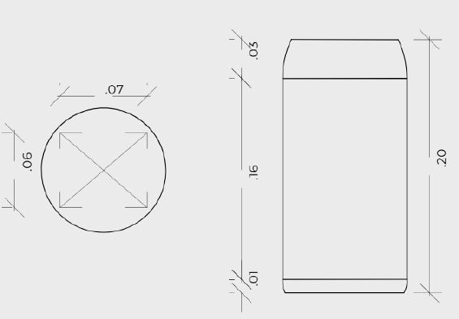
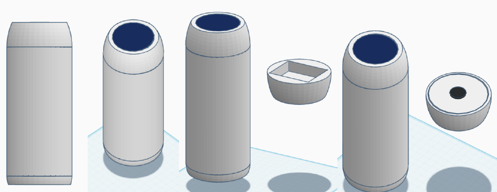
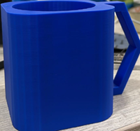
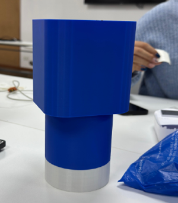

Proyecto de Innovación
Laboratorio de Innovación II
Promedio 2
En la semana 6 se verificó el funcionamiento correcto de los sensores y su comunicación con la app, realizando ajustes en el código tanto de Arduino como de la aplicación. A la par, se desarrolló el diseño inicial de la carcasa del termo, incluyendo la selección de materiales adecuados para su estructura y el diseño de las piezas internas necesarias. Se llevó a cabo las primeras impresiones 3D y pruebas de ensamblaje para validar la forma y compatibilidad de los componentes.

Desarrollo Electrónico
En la semana 7, se realizaron diversas pruebas con Arduino utilizando cables de conexión para integrar correctamente los sensores al circuito.

Prueba de la placa Arduino con pantalla LCD, sensores y protoboard, utilizada para verificar la lectura de datos y el correcto funcionamiento del circuito antes de su integración al prototipo final. Logramos resolverlo con exito.

Codigo Arduino
En la semana 8, se trabajó en la programación del sistema desde la computadora, desarrollando el código base en Arduino para dar inicio al funcionamiento general del prototipo.

Configuración de las instrucciones necesarias para la lectura de sensores.

Prototipo 3D
En la semana 9, En la semana 9, se inició con el modelado del prototipo en 3D, considerando la forma y dimensiones previamente definidas. Este proceso permitió visualizar con mayor claridad la estructura general del diseño y detectar posibles errores o inconsistencias en las uniones y proporciones.

Diseño 3D del prototipo realizado en el software de modelado, permitiendo visualizar y ajustar la estructura antes de la impresión.

Impresión del Prototipo
Prototipo impreso en 3D y ensamblado, permitiendo evaluar su estructura física, ergonomía y la correcta integración de los componentes electrónicos.

Esta versión sirvió como base para pruebas de uso y retroalimentación, permitiendo identificar aspectos a mejorar en el diseño y el comportamiento del sistema en condiciones reales.
Datos Importantes
Como valor adicional, se realizaron pruebas previas en simulador antes del armado real, lo que facilitó la detección de errores en la conexión de sensores y optimizó el tiempo de trabajo. Estas simulaciones permitieron validar la lógica del sistema, ajustar detalles técnicos y asegurar que los componentes funcionaran de forma coordinada antes de pasar a la etapa física del prototipo.